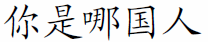

Unicode Truetype font installer for LaTeX
 This tool consists of a batch file [ttffortex.cmd] that simplifies the installation of TrueType fonts for LaTeX
for use with Unicode UTF-8 encoding.
Note that this script has only been tested with the MikTek distribution.
Download
The latest version can be downloaded  here.
here.
Quick documentation
Command line arguments
The command syntax and options are explained when you execute ttffortex.cmd with no parameter. As an example, if you want to install the True-type font Cyberbit.ttf located in the Windows's font directory then just type:
ttffortex C:\WINDOWS\Fonts\Cyberbit.ttf
By default, the script detects automatically where MikTeX is installed on your machine. If you want to install the font to a specific directory (for instance a per-user localtexmf folder) then just pass it as a second parameter to ttffortex.
Using TrueType fonts with Unicode encoding in pdflatex
After installing the TrueType fonts that you need with ttffortex.cmd, you can start creating .tex document that contain unicode characters using your favourite Unicode editor (Notepad for instance) in UTF8 encoding mode. Before compiling it, make sure that you have a copy of this file and that one in
some directory accessible by latex (the directory where your .tex file is located for instance).
You will also need to add the following lines in the preamble of the .tex file:
\usepackage[utf8ttf]{inputenc}
\usepackage{ttfucs}
\DeclareTruetypeFont{shortfontname}{fontname}
One instance of the \DeclareTruetypeFont{shortfontname}{fontname} command is required for each font that you want to use in your document
where fontname is the name of a Truetype font and
shortfontname is the string consisting of the 6 first letters of fontname.
In the body of the document you can change the current font to one that has been declared in the preamble using the command
\TruetypeFont{fontname}.
The advantage of using UTF8 encoding compared to other encodings such as BIG5 and GB, is that you do not need to change the windows system code page or install any third-party software in order to see the symbols in your editor. Consequently you can view document containing text in different languages (Arabic, Chinese, Korean, ...).
Examples
The file hanzi_pdflatex_utf8.tex is an example of latex source containing Chinese characters. Running pdflatex on it produces the following
output.